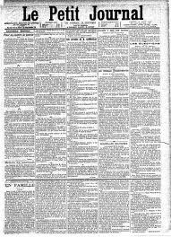

Publications "Wir müssen wissen. Wir werden wissen." (David Hilbert) |
 |
This rather young page contains my various works, among them are my graduation thesis.
Publications
- Uniqueness of roots up to conjugacy in circular and hosohedral-type Garside groups. (2023)
Journal of Group Theory 27, 5 (2024) p. 1091-1128
- Generalization of the Dehornoy-Lafont order complex to categories. Application to exceptional braid groups.(2023)
Applied Categorical Structures 32, 1 (2024) Article No. 1, 28 pp.
- Regular theory in complex Braid groups. (2022)
Journal of Algebra 620 (2023) p. 534-557
Preprints
- Generalized J-groups, J-braid groups and Seifert link groups. (2025)
With I. Haladjian
- Conjugacy Invariants for powers of rigid braids: a uniformity phenomenon. (2025)
With M. Calvez, J. González-Meneses and B. Wiest
- Normalisers of parabolic subgroups of Artin-Tits groups and Tits cone intersections. (2025)
With E. Heng, A. Licata and O. Yacobi
- Proof of Shvartsman's conjecture on braid groups of projective complex reflection groups. (2024)
- Parabolic subgroups of complex braid groups: the remaining case. (2024)
- Springer categories for regular centralizers in well-generated complex braid groups. (2023)
Graduation thesis
- Garside groupoids and complex braid groups. PhD thesis, advised by Ivan Marin (2024)
- Théorie de Garside, applications aux groupes de tresses complexes. Cas de G31. Master's thesis, done under the supervision of Ivan Marin (2021)
- Éléments de théorie des distributions. Analyse de Fourier des distributions. Master's thesis, done under the supervision of Olivier Goubet (2020)
- Compléments sur l'homologie générale. Théorie des catégories (ex)triangulées. First year Master's thesis, done under the supervision of Yann Palu (2019)
- Théorie des Catégories et Introduction à l'homologie. Bachelor thesis, done under of the supervision of Yann Palu (2018)